Chapter 11: Beyond the ionosphere
Existing around earth (and all planets) is a neutral belt of radiation. Measuring from the equator of earth outward, the outer edge of earth's belt is approximately 40,000 miles high, and under normal conditions would be roughly 100 miles thick. The "layers" of this belt are "locked" into existing shells of the earth's magnetic field. This belt acts to shield the earth from energy generated by the sun (see segment four) in that it offers a resistance to the neutral solar radiation, thus slowing its velocity. Some of this solar radiation is slowed enough to become mass, and is "trapped" within the belt. Each layer of the belt will tend to accumulate a given sized particle: finer particles will be found closest to the outer layer of the belt: larger particles in a layer closer to the inner layer of the belt.
Once converted to mass, all particles seek to stabilize into systems. The fine particles in the outer layers of the belt are not yet assembled into systems, and are therefore neutral, and will be repelled from the north and south poles of the earth. Their velocity is great, and they continue their motion, but now they're held within a layer of the belt and so instead of moving in their previous direction, are now confined to moving along the length of the belt. As they approach one pole in this journey, they are repelled, and so reverse direction. As they then near the opposite pole they are again repulsed, and again reverse their direction of motion. This movement occurs at a tremendous velocity, and the repulsion by the poles ensures the continuation of the oscillation of these fine particles back and forth along the length of their particular layer of the belt. Their velocity remains fairly constant, being very near .9 times the velocity of light, but even at this velocity assimilation of particles through collision occurs, and these very fine particles begin to assemble into minute systems of particles.
Once a particle joins other particles and creates a system, it is no longer neutral, and now begins to respond to the gravitational attraction of the earth. This attraction encourages the new system to filter through to a lower layer of the belt, closer to earth. The new system now carries an electrical charge, but it is so minute as to be a negligible factor, and oscillations along the length of their present position within the belt continues, but the velocity will have decreased somewhat. This weight gain and subsequent reduction in velocity allows for more rapid assimilation into larger and yet larger systems of particles. With each increase in weight (i.e.: additional mini-systems added), the developing system of particles will be more responsive to the gravitational attraction of earth, and will filter through subsequent layers of the belt, moving ever closer to earth as the system develops into a more complex system.
By the time the original fine particle reaches the layer of the belt nearest to earth, it is a member of a complex neutron or proton system, and has undergone a dramatic reduction of velocity during its passage through the layers of the belt. Proton systems will be attracted to the north pole, while neutron systems will be attracted to the south pole. As they move toward their respective attracting pole along this final belt, some will find that their weight and slow velocity can no longer resist the gravitational attraction of the planet as a whole. These systems will then leave the belt at some point along its length and will spiral earthward, where they will continue their assimilation with other systems of particles, eventually forming atoms and then ever more complex structures.
Other systems within the belt proceed toward their attracting pole, and their velocity once again increases as they near the pole and feel the attraction grow stronger. At this point it must be recalled that every falling body experiences a flow of energy whereby energy is extracted at the leading edge of the fall, cycles around the body (creating the gravitational field), and then re-enters the body as input energy. During this cycle many different energies join the flow (both polarized and neutral energies from various sources) and are carried along to ultimately approach a pole area. As this energy approaches a pole it begins to lose velocity, and any neutral energy within the flow polarizes. This loss of velocity occurs because of the extreme congestion within the narrow corridor leading to a pole, which must accommodate energy input from the gravitational field cycle, mass from the radiation belt, and energy input from other sources which are too numerous to be discussed at this time. This corridor is therefore an area of high turbulence, as input energy from all quarters converges here. While neutral energies from the gravitational field are slowing and polarizing, mass from the radiation belt is speeding up, and most of it will convert to energy. Collisions are ongoing, as all of the input is compressed into this relatively small area - still miles above the earth's atmosphere.
For the sake of clarity this re-entry will be described in terms of undergoing three different phases. In reality however, it should be realized that re-entry happens very quickly, and one phase blends into the next - none are completely distinct and separate from the others. The general positions of energies during these three "phases" of re-entry are shown in figure one.
NOTE: gravitational field extends far beyond what is shown in diagram.
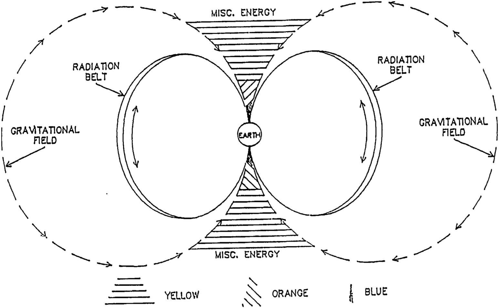supplement, Fig. 1
During the first phase (yellow), all of the input energies begin to converge as they approach the corridor, and neutral energies begin to polarize. At this point the energies, if measured, would prove to be of very short frequencies, invisible to the human eye. Phase two (orange) finds all of this polarized energy jammed into the narrow space of the corridor proper, where it encounters the input from the radiation belt which is accelerating and forming into short frequency energy. During this phase the short frequency energies from these two sources (and the misc. sources) begin to "bump" into and join with one another, forming longer frequency energy, which comes within the spectrum of light visible to the eye. On earth we have named phase two the aurora borealis, whose presence depends upon the sized frequency being formed, and whose intensity depends upon the amount of input energy being introduced. As this energy now nears the outer atmosphere in its third phase (blue), it encounters additional resistance from mass contained therein, which slows the energies down a bit more. This results in a combining of the mid-sized energy frequencies into yet longer frequencies which again move out of the visual range, causing the aurora to seem to "disappear". The polarized energy then enters the earth to fill the void caused by the extraction of energy, and the cycle continues in perfect balance indefinitely, or until it's disrupted forcibly by outside interference, as has happened in the case of planet earth.
Until the first nuclear war in the mid 1940's, the radiation belt surrounding earth functioned perfectly - as just described. For the next decade bomb testing continued, as man played with his new toy - fission. When Dr. Van Allen undertook to measure the radiation belt, he discovered there were two belts surrounding earth, and made public his findings. Murmurings among the technicians involved with the project caused concerns that the lower belt may be the result of nuclear fission debris.
Perhaps to still rising doubts about nuclear fission and fusion, a project code named Argus was carried out in Aug.-Sept. 1958, where three hydrogen bombs were exploded in space beneath the lower area of the Van Allen belts. The project itself was top secret, but its effects were not. The fused material produced by these explosions was of course very heavy as compared with other fission produced material within the belt, and so it settled in at a lower layer of the magnetic field which had previously been void of debris. Being so near earth and very heavy, this fusion debris was very rapidly channeled back into earth as input. Atmospheric scientists who knew nothing of Argus detected great streaks of lithium in the especially brilliant aurora borealis which occurred on the heels of Argus. Puzzled and fearful, these scientists quickly announced that there was severe fusion occurring in the radiation belt. News of Argus did not come to light until some years later, and is still shrouded in some mystery. Two of the most obvious questions which remain to be answered are, why did they do it, and so they yet realize how very close they may have come to fusing the entire radiation belt and setting off a reaction which could have fused the oceans of earth?
In 1962, the scientists involved with the space and nuclear programs again measured the radiation "belts", but now found there was only one huge belt, some 35,000 miles thick. It was loudly proclaimed that Van Allen had been incorrect in his measurements, and that he'd mistaken the one large belt for two separate belts. Van Allen was correct. At the time he took his readings there were two belts - one natural and one (the lower) unnatural - full of fission debris. By 1962 the large area between those two belts had been filled in by the vast amounts of fissioned material produced on earth, which then spread out around earth – each different particle finding a niche (layer) within the magnetic field suitable to its particular weight and/or stage of assimilation. The very lowest layers were now also filled in, but these contained fused material created through hydrogen bomb testing. These are very heavy (and close to earth) being more fully assimilated, and contain more complex systems - including basic elements and some simple compounds. Figures two-five attempt to show the stages in the deliberate and ongoing destruction of earth's protective shield, the radiation belt.
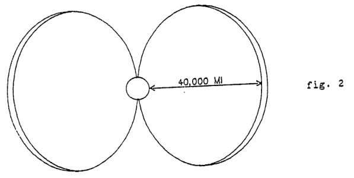supplement Fig. 2: Radiation belt prior to 1945
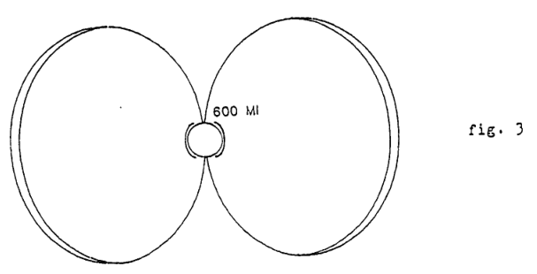supplement Fig. 3: By 1958 there are two belts. One natural and the other filled with fissioned debris
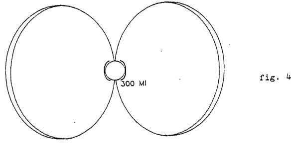Supplement Fig. 4: By 1960 (after Argus and testing programs), the lowest belt had formed, filled with fusion debris.
When measurements were taken again in 1962 it was found that there now existed only one huge belt, for by this time ongoing fission programs on earth had added vast quantities of new fission debris to the radiation belt, and the space between the natural and fission belts was beginning to fill in.
Today, thanks to the efforts of university teams and other research facilities, the presence of nuclear debris at least in the lower belt is grudgingly admitted by our nation's "responsible" agencies to be the result of the nuclear programs, but concerns for this fact, if any exists, are brushed aside with the old "catch all" argument that nuclear energy is a natural energy. This argument continues on to assure any citizens who are aware enough to be concerned that since fission and fusion are nature's favorite tools, that nature also has built-in mechanisms for balancing out little problems like debris in radiation belts. We fully agree that nature will restore balance, but it will not be in the quiet manner our very learned leaders expect. Nature is about to begin making a great deal of noise, and this brings us to the subject of how restoration of balance will be achieved.
NOTE:
To facilitate this discussion, the overlapping sections of the radiation belt (fig. 5) will be spoken of as though they were three distinct belts.
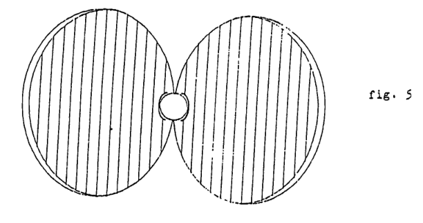supplement Fig. 5
All three sections of the radiation belt (natural, fission, and fusion) contribute constant input to the pole areas. Earth has no mechanisms for regulating the flow, relying completely on a balanced system (and balanced input), so when the system is not balanced, earth must continue to accept all offerings. Due to the existence and constant input of the unnatural belts the corridors leading to the poles are highly congested (as are the belts themselves) and velocities are reduced. Lesser velocity and more collisions allow many of the protons and neutrons from the natural and fission belts to begin assimilation into more complex systems even before their arrival in the corridor. This additional weight coupled with a further reduction in velocity upon entering the tightly packed corridor prevent many of these systems from converting to energy. Instead, they will collide with similar (highly isotopic) systems in the corridor and continue assimilation with these systems. Many are still incomplete when they reach the earth's atmosphere, but others have managed to assimilate into simple elements, notably forms of hydrogen. These elements are formed under unnatural, extreme conditions, and investigation would reveal that super heavy, abnormal forms of hydrogen are entering earth's atmosphere from these corridors in a steady stream.
While the natural and fission belt inputs are building elements, the heavier, more complex systems from the fusion belt enter the corridor as low velocity, "fused" elements in a highly unstable state. Here they also collide and assimilate with similar systems and form ever more complex systems, including helium, lithium, and beryllium - many of which will also be abnormally heavy, strange elements.
The remaining input from the belts which are not sufficiently slowed to have achieved any great degree of assimilation will be the most easily converted to energy when struck by incoming (gravitational cycle) energies. These energies will then follow the same process described earlier - polarizing, forming frequencies, and joining the other quantities and forms of input in producing spectacular lithium and beryllium streaked auroras.
When these isotopic systems, elements, (and compounds) enter the ionosphere, they collide with the many elements and compounds already present in great abundance, and continue assimilation - forming more complex fluorine, neon, and chlorine (etc.) systems. These chemicals are bombarded constantly by both incoming and by outgoing (fission released) particles exported from earth (see segment three).
The net effect of this extreme disorder is an ionosphere experiencing ongoing and abnormal chemical reactions which result in the creation of negative plasmas, fusible hydrogen, and destructive elements and compounds. As long as fission and fusion continue to be the favorite toys of earth leaders, the turbulence in the ionosphere will continue to become progressively worse.
All of this extra input also affects the corridor itself, which is important because it is causing the corridor to warm. As the temperature within this great avenue rises, so also will the temperature of the atmosphere through which it passes begin to warm. The land mass below cannot fail to follow suit as- this process progresses, and the cumulative effect of this overall warming will force the ice caps to begin to melt. If this is already being noted, expect it to become exponentially more rapid as earth's cycles become increasingly perverted.
In the past we've tried to show the great interrelation between the major cycles of earth, and their control over all other minor cycles. The overriding cycle is the input/output cycle which determines the gravitational field (and hence repulsive force), this rotation rate, and the value of the magnetic field. Its importance therefore cannot be overstated. It is this grandfather cycle - the basic foundation of all other cycles - which is being directly attacked by fission and fusion. Until only recently the observable effects of this destruction were small, seemingly unrelated warning signs - easily rationalized. Now, however, earth is approaching a critical juncture where rationalizations will no longer satisfy anyone.
Once fission or fusion disrupts an atomic system, releasing unstable particles, we are saddled with them indefinitely, for they seldom escape earth's gravitational field (bubble). Those that were not repelled back to earth, picked up by the radiation belt, or settled in at the poles, have joined the flow of the gravitational field cycle, and now also return as extra input energy. At this most critical juncture we face a situation where the radiation belts are full, the gravitational flow is overloaded, and the corridors can no longer maintain any sort of order. Meanwhile, earth operations continue unabated, pumping tremendous quantities of yet more of these particles into an already dangerously overloaded system. The result is clear - our foundation has begun to crumble.
In the past we've spoken of changing weather, greater volcanic and earthquake activity, ionospheric disruption, and hydrogen fusion implosions (etc.). Now, disturbing as it is, we must expand further to explain the future manifestations to expect from within the radiation belts themselves as they seek to maintain some sort of balance. Once again, these actions will be progressive in that at the outset the effects will be puzzling, but will be rationalized away. As the process continues, however, it will not only accelerate effects previously discussed, but will ultimately come to overshadow other consequences of fission and fusion in the minds of all, for these actions will not only be highly visible, but will also be deadly. Our team does not have access to data which would allow us to predict when these reactions will commence or how quickly they will pass from one level of intensity to the next, but we can attempt to show what will inevitably occur and why.
More and more accumulation of mass within the three sections of the radiation belt translate into progressively lessening velocity of the mass therein. When the input corridor reaches full capacity, a further loss of velocity is experienced within the belts, as mass becomes "backed up". Low velocities and dense concentrations are perfect conditions for rapid assimilation of particles into systems, and of systems into more complex systems. Each assimilation requires energy, which in a normal belt would be provided by the outward flow of extracted energy. In the case of our unnatural belt, the flow of extracted energy can never hope to keep up with the demands of the abnormally rapid assimilation. Even, due to the conditions within the belt and nature's demand that balance will replace imbalance, this mass must continue assimilation. The net result is that as developing systems arbitrarily use up all available energy in the vicinity to achieve assimilation, energy voids are being created within the belt. Nature cannot tolerate such a destabilizing void - balance must be restored - and so energy contained within a lower layer of the belt "feels" the upper level void, and rushes to fill it. See diagram 6.
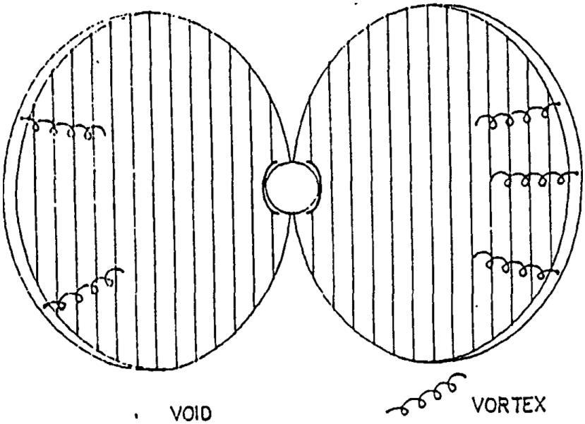supplement Fig. 6
Such reactions do not occur in a natural radiation belt, where assimilation is gradual and orderly, but the radiation belt surrounding earth no longer even remotely resembles a normal belt. Continued input of fission/fusion debris from earth assures the progression of this abnormal cycle, whereby velocities will become further reduced, assimilation more rapid, and energy voids larger. What will begin as movements of energy from one layer to the next will progress until huge vortexes of energy are rushing through dozens, and then hundreds of layers to fill upper level energy voids.
To begin with, this movement of energy will be detectable only as increased turbulence, but as the movements begin to span multiple layers of the magnetic field, more visible effects will occur. When a magnetic line (shell) of force is sheared, the energy contained is released at the point of breakage. The manifestation of this released energy is generically labeled "lightning" (current theories which attempt to explain the origin of lightning are silly and explain nothing). Lightning can and does occur in the absence of an atmosphere, and will be seen to also occur in the radiation belt when large vortexes of energy begin to make huge plunges - shearing the magnetic lines of force through which they pass.
It doesn't take a great intellect to understand that as energy moves from one layer to fill a void in a higher layer, that an energy void will be left behind, needing also to be filled. Energy within a yet lower belt will then "feel" this void and will surge to fill it. Eventually, as the belts fill up more and more and velocities become ever lessened, these reactions will reach frightening proportions - spanning the entire width of the radiation belt. See diagram seven.
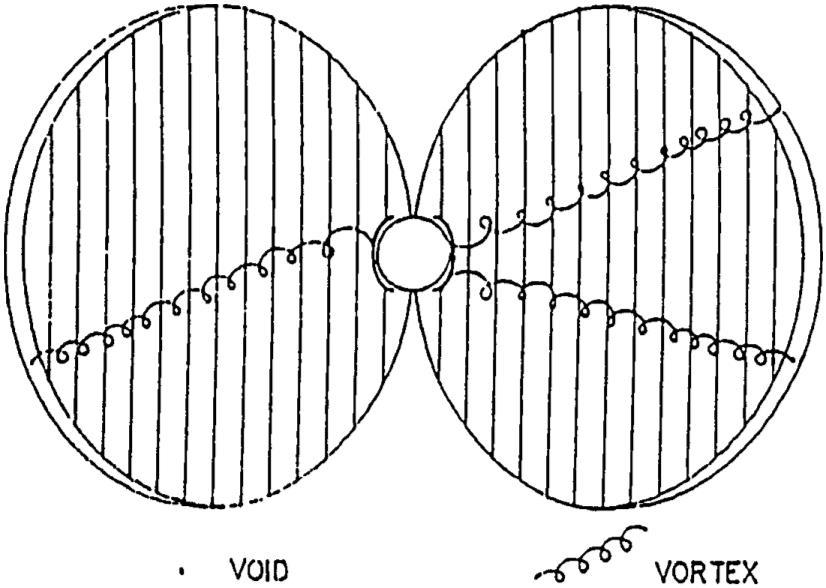supplement Fig. 7
When the inevitable moment arrives and even the fusion belt is tapped to fill an upper level void, earth will be directly affected, for a void in the lowest layers of the radiation belt can only be filled by tapping the energy output of the planet below. Extracted energy from earth is radiated from most of the planet's surface (save the pole areas), but the output is not uniform - some areas radiating greater quantities than other areas. At this point we must digress for a moment to explain one of the specific details not previously discussed, and show what is meant by a "focal point", for these areas will be the first to be tapped to balance fusion belt energy voids.
The largest quantities of extracted (neutral) energy are found along the leading edge of earth's fall, as shown in segment two (note: if earth were not tilted on its axis this line would be the equator. As it is, a few simple calculations will reveal the exact position of this line at any given point in earth's orbit). One of the properties of neutral energy that is identical to other energies is its tendency to follow the path of least resistance, which means it can be conducted.
As this neutral energy leaves the central section of the body earth and approaches the outer surface, it feels the slight resistance offered by earth's atmosphere. If there is no ready alternative to this path, the energy will flow through the resistance, experiencing only a very slight loss of velocity. If, however, there is a pathway of lesser resistance in the vicinity, the neutral energy will have a natural tendency to flow towards it. All energy from the area surrounding such a point of lessened resistance will therefore be drawn to it, creating a focal point of extracted energy. An excellent example of such a natural focal point is a mountain, which possesses a broad base and a graduated incline. Diagram eight illustrates this phenomenon.
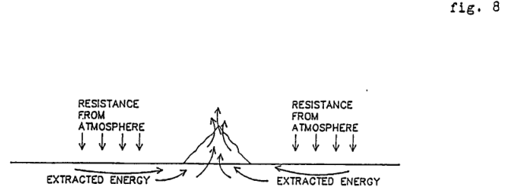supplement Fig. 8
Tall buildings on a flat plain, ships at sea, and islands are other examples of natural focal points, and any of these structures which reside on or near the leading edge will be the strongest radiators of extracted energy anywhere on earth. Therefore, when the moment arrives when an energy void appears within the fusion belt, it will be these focal point areas along the leading edge which will "feel" that void, and will rush to fill it. Rapid movement of energies that normally leave earth at a gentle, regulated pace disrupt balance, and when nature's cycles are tampered with, consequences follow.
As these events begin to occur, subsequent reactions on earth will vary somewhat depending on the location of the focal point affected, but amid all of the variables a definite pattern will emerge. When a vortex of extracted energy detects a void in the fusion belt, it will sweep up and carry surrounding atmosphere with it into the fusion belt. This upward rush of air will cause a low pressure zone to be left in its wake, which must be stabilized. Air from the immediate vicinity will join with ionospheric O3 and move in to fill the gap, creating high winds and great turbulence. As the area stabilizes, the O3 will again rise to its original position, but leaves behind foliage and wildlife damaged by over exposure to this gas. As these reactions become more and more regular, plants will slowly smother and die.
Atmospheric gasses carried to the fusion belt will create a high pressure zone there, so that when a low pressure zone is "felt" below, these gasses will return to balance it. When it does return; it is most likely to be in one of two forms, depending on its moisture content at the moment it was swept away. Air carried to the fusion belt will have undergone rapid cooling upon its arrival. If this air was relatively dry, it will be most likely to return as snow. If it was very humid it will be more prone to latch on to systems within the fusion belt, freeze, and return to earth as radioactive hail. This process is illustrated in the following series of drawings.
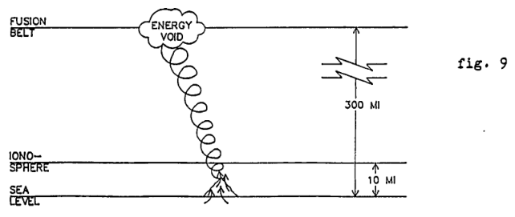supplement Fig 9: "Focal point energies feel fusion belt void and move to balance it."
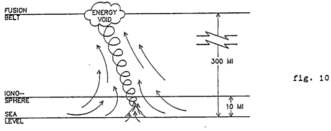Figure 10: Surrounding atmosphere is dragged with the exiting vortex into the fusion belt.
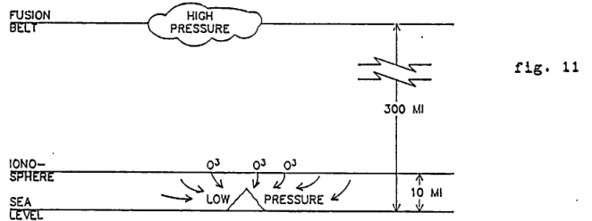Figure 11: "O3 and nearby atmosphere rushes in to balance low pressure zone left behind."
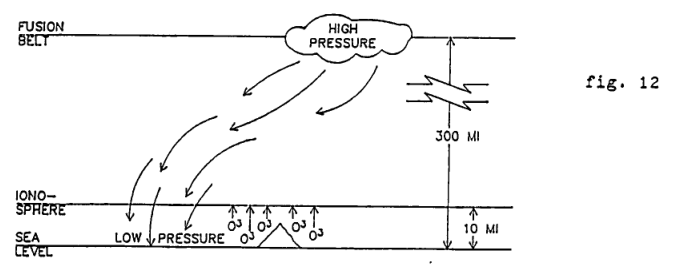supplement Fig 12: 'High pressure in fusion belt detects low pressure area somewhere below and returns to fill it, bringing snow AND/OR radioactive hail.'
As the radiation belt struggles to accommodate more and more nuclear debris and at the same time attempts to adjust to an ever accelerating energy exchange cycle, these reactions on earth will become increasingly violent. Focal points along the leading edge will have greater energy demands placed on them, and energy vortexes leaving earth will become larger and more energetic. When these huge vortexes surge toward the belts, they will be powerful enough to shear the lines of magnetic force in their path, creating gigantic lightning displays accompanied by literally deafening claps of thunder. Winds near focal points will reach hurricane proportions, with resulting hail (or snowstorms) of equal or greater ferocity. By the time conditions have reached these proportions in the primary risk areas, focal points farther removed from the leading edge will have begun experiencing the initial phases of this phenomenon, as described earlier and illustrated in figures nine through twelve. Progression of this cycle will yield more of the same - only in greater proportions. As exiting vortexes grow ever larger, reactions will simply become more intense, destroying all life within greater and greater areas surrounding focal points. These very large vortexes will easily and regularly trigger avalanches, mud slides, and the like, and as always, focal points farther removed will be but one step behind these leading edge reactions. Before long, nuclear reactors (which also radiate vast amounts of energy) will begin to be tapped to fill radiation belt energy needs as well.
Vast exits of energy from earth to the belts will leave behind energy voids within the focal points themselves, which nature cannot and will not tolerate. To fill these voids, energy from deeper within the planet will move quickly to restore balance. This rapid, abnormal rush of energy will set off interior, physical vibrations - triggering earthquakes of ever greater magnitude as the process continues. To balance these interior energy voids earth must take in more energy at the poles. It isn't difficult to see that this will compound the problem, creating even stronger focal points more sensitive to energy voids within the radiation belt, which will in turn accelerate the exodus of energy from earth. A greatly accelerated input will also cause interior temperatures to rise near earth's core. At first this temperature change will be manifested on earth's surface as "hot spots" (example: El Nino) followed by overall ocean warming, more severe and abnormal weather, and the re-activation of formerly "dead" volcanoes. Energy voids within nuclear reactors and the surge of interior energy seeking to fill those voids will make nuclear meltdowns more and more commonplace occurrences. The final stages in this particular process will witness these exiting vortexes dragging earth's atmosphere deeper and deeper into the radiation belt to fill more upper level energy requirements - ultimately carrying it so far distant that it cannot return in any form.
The last gasp of life on earth will be a horrible event, but for better or for worse, not many of us will be alive to witness the demise of our world, because if (or when?) we arrive at this point, the inhabitants of earth will have simultaneously been attempting unsuccessfully to contend with a less visible but in many ways more dire consequence of an accelerated energy exchange cycle. It is this larger question to which we will now direct our attention.
It's common knowledge that earth experiences an annual "wobble", but there is little agreement and a lack of logical theories as to the reason why the earth wobbles. Without going into laborious terminology, we could simply state that the wobble is due to the dynamic interaction between the sun and its magnetic field and the earth and its magnetic poles and gravitational field. Among other things, this interaction means that when an earth pole comes to face the sun, there will be a repulsion directed at that pole which will "push" that pole away from the sun to a certain (relatively small) degree. In the case of earth, the point of greatest repulsion against the South Pole occurs on and near the winter solstice, with recovery being achieved by the time of the vernal equinox, when the repulsion becomes more equally divided between the two poles. As the summer solstice then approaches, the North Pole comes to face the sun and so has the brunt of this repulsion directed at it, pushing it away from the sun while the other pole is protected. Recovery will have been achieved by the time of the autumnal equinox, when again the poles share the force of this repulsion more equally. The net result of this interaction is a relatively small and harmless annual oscillation of the poles around the earth's axis, or in other words, a wobble.
As the energy exchange cycle of earth continues to accelerate and earth's gravitational field as a result grows larger and stronger, this interaction between earth and sun will also intensify, causing the solstice reactions at the poles to be more vigorous and causing the overall oscillation to become progressively more pronounced. This in itself will be a minor event in that it won't even come close to causing the severe problems some of the other reactions we've discussed will cause, but it is something to look for because once it begins to be noticed it will mean that a closely related but more deadly result of an increased repulsive (gravitational) field will have commenced, ie., earth's irresistible movement away from the sun. This will not be a gentle, regulated "drift" away from the sun, but rather will manifest as a "see saw" motion which will be accompanied by a full spectrum of resulting upheavals on earth's surface.
As the earth's repulsive force becomes stronger it will react against the center of its primary gravitational field, the sun. This repulsion will be more abrupt than gradual due to the abnormal condition of earth's cycles, the result being that earth will push itself further outward than the strength of its repulsive force can long maintain. The sun's attraction will at this point again be felt strongly enough to "pull" earth back toward the sun, where the abnormally strong repulsive force of earth again over compensates in its push away from the sun. This back and forth motion will be ongoing, so that from a vantage point in space earth will appear to stagger in her orbit around the sun, and this swaying motion will become progressively more violent as long as earth's cycles continue their deterioration.
The combined action of these two motions will cause the leading edge of earth's fall to adjust continually as the position of the planet in relation to the sun changes. This means that the areas of energy input on earth will also be forced to adjust in order to remain the prescribed 90° from the leading edge. As the input areas (poles) change position, the ionospheric holes will follow, exposing large and varying surface areas below to dangerous ultraviolet radiation. Besides destroying any remaining vestige of normal weather, a constantly shifting leading edge will result in the creation of focal points of extracted energy in areas which were previously relatively safe from interactions with the radiation belt (as described on pages 11-14). As always, we can expect this process to be progressive.
We've attempted to show the interrelation and interdependencies between the major cycles of earth, which it should be realized, earth's close companion, the moon, also experiences. Step by step we've also attempted to show what happens to fission and fusion released particles, which move out in all directions ranging in the spectrum from those that move inward, toward the earth's core, to those that are so energetic that they escape to the outer reaches of the earth's gravitational field. These two extremes do not account for the bulk of the particles which concern us however, as the vast majority are radiated outward but do not retain enough velocity to escape too far, but instead accumulate at a pole, are picked up by the radiation belt, or encounter the highly positive incoming solar radiation which repels them back toward the earth. As previously explained, when we speak of negative vs. positive in relation to these energy particles it is a relative situation, for single particles are neutral - it is their relative size which determines which energies a given particle will repel or be repelled by. In this sense then, fission released particles are very negative in respect to the natural extracted energy of earth, and are even more negative in respect to solar energies. Even though these particles will also be negative in respect to the natural extracted energy of the moon, the repulsion offered by the smaller energies (bubbles) produced by the moon is much less than that offered by earth and the sun. This encourages the fission produced particles which have escaped through earth's radiation belt to accumulate in the vicinity of the moon – most particularly on the dark side of the moon, where they are shielded from the repulsion offered by both sun and earth. We will now briefly discuss the effect of those particles which find safe haven near the moon.
Like earth, the moon has no mechanism for refusing input energy, and so has and will continue to take in fission released energies as input, which must then exit as extracted energy. More energy in equals more energy out, resulting in the construction of a greater gravitational field. A greater gravitational field about the moon will cause that body to repulse itself more vigorously from earth, which of course represents the center of the primary gravitational field through which the moon falls. Meanwhile, a stronger gravitational field about earth will heighten it's attractive force toward all bodies existing within its gravitational field, notably the moon. The effect of this "tug of war" will be nearly identical to the abnormal interaction to be expected between earth and sun, ie., the moon will begin to "stagger" in her orbit of earth, for the same reasons as described in regards to the earth/sun relationship. Many effects from the moon's see-saw orbit will be measurable, but the most visible will be the negative effect on earth tides, which will be most especially noticeable and dangerous during periods when the moon draws abnormally close to earth. During periods when the moon is positioned between earth and sun the danger will be most acute, for at these times the moon is always under great pressure. Being fully exposed to the gravitational attraction of the sun, she will repulse herself more strongly from the sun, and the stronger her repulsive field is, the more vigorous will be the repulsion. This, however, will force her closer to earth, where the ever increasing strength of her gravitational (repulsive) field will have disastrous consequences for all coastline areas. As earth and moon cycles become increasingly unbalanced, tides will begin to resemble tidal waves, and coastal dwellers will be forced into regular evacuations until finally there is nothing left to return to.
This paper represents our last planned effort, although we stand ready to answer any questions the reader might have. Throughout, we've done our best to present a glimpse of this planet's future, and taken as a whole, this work gives the reader at least an idea of what to expect and why to expect it. Truly, the proverbial eleventh hour has arrived, and the clock is ticking.
Reflection on our outreach attempt of the last year and the apathy encountered at every turn - with so few notable exceptions - leaves a sense of acute weariness and a feeling that the vast majority of human beings are content to remain insulated in their own small world, where they struggle to maintain at least a degree of control and order, and it seems clear that until the crisis this planet faces intrudes directly into that small world, there are few people who will show any great concern for the larger questions and the fate of a world they will not live to see. For those notable exceptions whose concern extends beyond the immediate and into the future, this final paragraph is reserved.
Ultimately, if nothing is done, this planet will be void of life, and though none of us will be alive to witness the final death rattle of earth, the event will occur in one of two manners. In the more optimistic scenario, earth will simply continue to deteriorate and drift farther away from the sun until all but perhaps the lowest forms of life run out of food and perish. Earth will eventually find a new orbit and stabilize, but it is highly unlikely that higher forms of life would ever again evolve in such a hostile environment as will exist on earth far from the sun. However, it is much more likely that, given the erratic thought processes of earth leaders, that an action reminiscent of the insane rationalizations which allow projects such as Argus to be undertaken will trigger a series of hydrogen implosions, igniting the atmosphere. Such an uncontrollable chain of fusion reactions would consume all available energy, which means the gravitational field of earth will be destroyed, as this field represents the only ready supply of the vast amounts of energy which would be required. Without a flow of energy through the body earth, the magnetic field cannot exist, and lacking any sort of repulsive force, earth will have no resistance to offer against the enormous attraction of the sun, and will begin her fall toward that body. Admittedly, the chances are slight that earth would, in such an event, strike the core of the sun, but it is possible, and so deserves mention. If earth were to strike the core of the sun it could cause the sun to split, in the same manner that a neutron which strikes the center of an atom can split that atom. If the sun were to split, the solar system as we know it would cease to exist, and potential havoc created by the fission of our solar system within the galaxy in general cannot be underestimated or taken lightly. There could be a great deal more at stake here than our small, rather insignificant world, and we'd better think about that very carefully as we weigh our choices. Our team has done what we could, and at present have no firm ideas as to what our next attempt should be. We know what needs doing in the way of development of technologies, but it's impossible for us to accomplish this anytime soon without help. At this point then, all we can really do is ask that each person receiving this material try to pass it along. Perhaps in this way a team can eventually be formed and work can proceed. Until such time, if there are any questions, we will be pleased to answer them.
Project Stardust Team
Lloyd B. Zirbes, Director
April 14, 1987